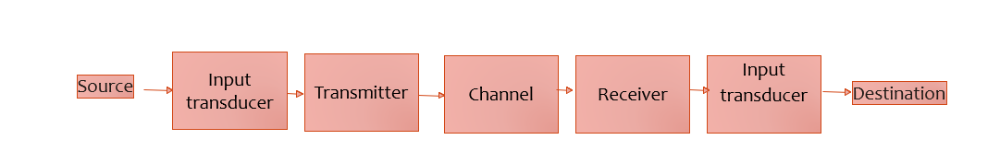
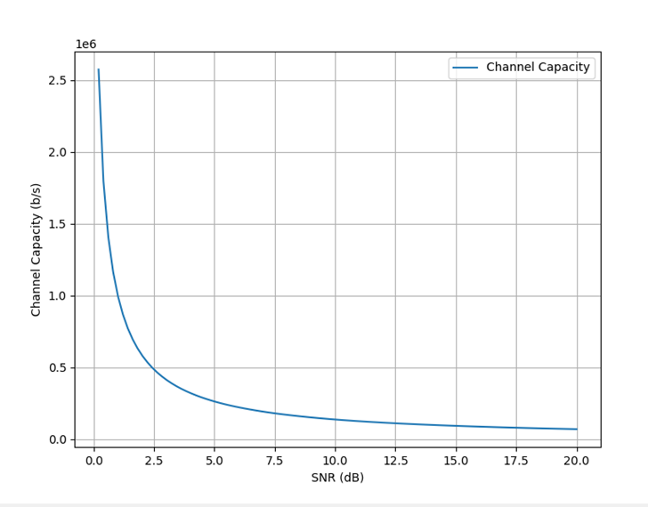

Day 1
Introduction to Telecom
Communication basics
- Communication is a process of transfer of information from Sender to Receiver over a communication medium
- Communication medium
- Verbal communication
- Written communication
- Electronics and Digital communication
- Visual communication
- Print media
- Broadcast media
- Gestures and body language
Communication systems
A communication system conveys information from its source to a destination.

Capacity of a channel

The most important question for a communication channel is the maximum rate at which it can transfer information. There is a theoretical maximum rate at which information passes error free over the channel, called the channel capacity C. The famous Hartley-Shannon Law states that the channel capacity C is given by:
C=B*log(1+(S/N))
Where, - B is the bandwidth, - S/N is the signal-to-noise ratio.
What is telecommunications?
Telecommunications is the transmission of information over a distance. It encompasses a wide range of technologies, from simple telephone networks to complex fiber optic networks.
What are the changes that telecommunications engineering tries to solve?
General challenges in telecommunications engineering include:
- Performance
- Reliability
- Affordability
Some specific challenges are - Increasing the capacity of telecommunications networks to handle more data traffic - Reducing the latency of telecommunications networks to improve the responsiveness of applications - Expanding the coverage of telecommunications networks to reach more people and places - Making telecommunications networks more secure and resilient to attacks - Reducing the cost of telecommunications services to make them more affordable for everyone
What are the breakthroughs in telecommunications engineering?
| Year | Innovation/Discovery or Invention | Wikipedia article |
|---|---|---|
| 1832 | Samuel F. B. Morse invents the telegraph | Telegraph |
| 1876 | Alexander Graham Bell invents the telephone | Telephone |
| 1887 | Heinrich Hertz discovers radio waves | Radio wave |
| 1895 | Guglielmo Marconi invents the radio | Radio |
| 1906 | Lee De Forest invents the triode vacuum tube | Triode |
| 1920 | The first commercial radio broadcast is made in Pittsburgh, Pennsylvania | Commercial radio broadcasting |
| 1927 | Philo T. Farnsworth invents the television | Television |
| 1947 | The transistor is invented at Bell Labs | Transistor |
| 1956 | The integrated circuit is invented at Texas Instruments | Integrated circuit |
| 1969 | The first ARPANET node is installed at UCLA | ARPANET |
| 1973 | The first mobile phone call is made on a Motorola DynaTAC | Mobile phone |
| 1974 | Vint Cerf and Bob Kahn develop the Transmission Control Protocol/Internet Protocol (TCP/IP) | TCP/IP |
| 1985 | The first commercial cellular network is launched in the United States | Cellular network |
| 1989 | Tim Berners-Lee invents the World Wide Web | World Wide Web |
| 1993 | The first web browser, Mosaic, is released | Web browser |
| 1998 | The first commercial satellite internet service is launched | Satellite internet |
| 2001 | The first 3G cellular network is launched in Japan | 3G |
| 2009 | The first 4G cellular network is launched in Sweden | 4G |
| 2019 | The first 5G cellular network is launched in South Korea | 5G |
This is just a small sample of the many breakthroughs in telecommunications engineering over the years. Telecommunications engineering has revolutionized the way we communicate and access information, and it continues to evolve at a rapid pace.
Generations of telecom
| Primary Motivation | Year | Technology | Details | Link to Documentation |
|---|---|---|---|---|
| To enable mobile communication | 1946 | 0G | Pre-cellular mobile radio telephone systems, such as Mobile Telephone System (MTS) and Advanced Mobile Telephone System (AMTS) | Wikipedia article on 0G |
| To improve the capacity and reliability of mobile communication | 1979 | 1G | Analog cellular networks, such as Advanced Mobile Phone System (AMPS) and Nordic Mobile Telephone (NMT) | Wikipedia article on 1G |
| To introduce digital technology to mobile communication, improving voice quality and data transmission rates | 1991 | 2G | Digital cellular networks, such as Global System for Mobile Communications (GSM) and Code Division Multiple Access (CDMA) | Wikipedia article on 2G |
| To provide high-speed data transmission for mobile devices | 2001 | 3G | Third-generation cellular networks, such as Universal Mobile Telecommunications System (UMTS) and CDMA2000 | Wikipedia article on 3G |
| To provide even higher-speed data transmission and lower latency for mobile devices, enabling new applications such as mobile video and mobile broadband | 2009 | 4G | Fourth-generation cellular networks, such as Long-Term Evolution (LTE) and WiMAX | Wikipedia article on 4G |
| To provide extremely high data rates, low latency, and massive connectivity for mobile devices and the Internet of Things (IoT), enabling new applications such as self-driving cars, augmented reality, and virtual reality | 2019 | 5G | Fifth-generation cellular networks | Wikipedia article on 5G |
| To further improve the performance and capabilities of 5G, enabling new applications such as 6G-enabled smart cities and factories | 2030 (planned) | 6G | Sixth-generation cellular networks | Wikipedia article on 6G |
Question
What are some standards that help in adoption of the technologies across world?